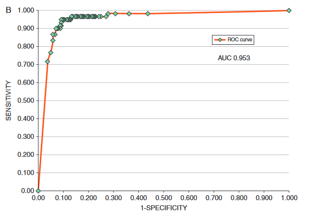

Rows: 150
Columns: 5
$ Sepal.Length <dbl> 5.1, 4.9, 4.7, 4.6, 5.0, 5.4, 4.6, 5.0, 4.4, 4.9, 5.4, 4.…
$ Sepal.Width <dbl> 3.5, 3.0, 3.2, 3.1, 3.6, 3.9, 3.4, 3.4, 2.9, 3.1, 3.7, 3.…
$ Petal.Length <dbl> 1.4, 1.4, 1.3, 1.5, 1.4, 1.7, 1.4, 1.5, 1.4, 1.5, 1.5, 1.…
$ Petal.Width <dbl> 0.2, 0.2, 0.2, 0.2, 0.2, 0.4, 0.3, 0.2, 0.2, 0.1, 0.2, 0.…
$ Species <fct> setosa, setosa, setosa, setosa, setosa, setosa, setosa, s…Lecture 5: Diagnostic Testing
BIOS 600 - Fall 2026
Announcements
Lab 3 Due Friday at 11:59pm
HW 2 will be assigned after class, due Sept 10 at 11:59pm.
Reading
Pagano and Gavreau: Section 6.4
OpenIntro Statistics: No corresponding section
Overview
Review from lab
Define prevalence, sensitivity, specificity, positive predictive value, negative predictive value
How conditional probabilities relate to sensitivity, specificity
Calculate sensitivity and specificity based on a 2x2 contingency table
ROC Curves
Review from Lab
Review
Consider the iris data set, which gives the measurements in centimeters of the variables sepal length and width and petal length and width, respectively, for 50 flowers from each of 3 species of iris. The species are Iris setosa, versicolor, and virginica.
Participation
Instructions: Go to Canvas and find today’s participation assignment. Write your answers to the following review questions in the text box. (1 sentence each)
I will assign questions 1-6 to random groups to report their answer after the timer is up.
This assignment is due tomorrow Friday 9/4 at 11:59pm.
08:00
Review
What would each of the following do?
Review
What would each of the following do?
Review
- What would be the difference in the results from these two code chunks?
Back to Conditional Probability
Conditional probabilities
Suppose we care about the probability that someone has HIV, denoted by \(P(HIV+)\).
- What if they have a positive HIV test?
\(P(HIV + | Test +)\)
- What if they have a negative HIV test?
\(P(HIV + | Test -)\)
Knowing the result of the HIV test changes our estimate of their HIV proability.
Question
Which of the three probabilities would we expect to be the highest? The lowest?
\(P(HIV+)\)
\(P(HIV + | Test +)\)
\(P(HIV + | Test -)\)
01:00
Medical diagnostics
Suppose we’re interested in the performance of a diagnostic test. Let \(A\) be the event that someone has a condition of interest, and let \(B\) be the event that a test for that condition is positive.
Prevalence: \(P(A)\)
Sensitivity: \(P(B|A)\), or the true positive rate
- probability that the test is positive given the condition is present
Medical diagnostics (continued)
Specificity: \(P(B^C | A^C)\), or 1 minus the false positive rate
- Probability that the test is negative given the condition is not present
Positive Predictive Value (PPV): \(P(A|B)\)
- Probability of having the condition of interest, given the test was positive
Negative Predictive Value (NPV): \(P(A^C | B^C)\)
- Probability that the person does not have the condition of interest, given the test was negative
Popularization of medical diagnostics
During COVID-19, diagnostic testing has become mainstream.

Testing for COVID-19 is not perfect. It may come back positive in some people who are not infected with SARS-CoV-2 and negative in some people who are.
Diagnostic tests are developed with both sensitivity and specificity in mind.
Sensitivity and specificity
The greater the sensitivity, the less likely it will miss real cases.
- Recall: sensitivity is the probability of a positive test, given the condition is present.
The greater the specificity, the more likely uninfected individuals will be correctly deemed negative.
- Recall: Specificity is the probability of a negative test, given the condition is not present.
A test’s performance can be surprisingly counterintuitive
Consider a scenario with COVID-19 testing in an asymptomatic or mild population with 1 in 51 people infected.
Assume the test is always positive in individuals with the disease (i.e., 100% sensitivity) but falsely positive 10% of the time (i.e., 90% specificity).
As shown in the figure (next slide), the chance that someone with a positive test result is actually infected is under 20% (1 in 6)
Illustration

Takeaway
Even if a test never misses true cases (perfect sensitivity), a modest false positive rate can mess up the results, especially when the disease is rare.
- Consequence: Most people who test positive may not actually be infected.
This demonstrates why specificity and disease prevalence are important as well in diagnostic testing.
Example
A new rapid test has been developed to detect influenza infection. A study compares the results of the rapid test against the gold standard laboratory PCR test. The results from 200 patients are shown below:
| PCR Positive | PCR Negative | Total | |
|---|---|---|---|
| Rapid Test Positive | 72 | 18 | 90 |
| Rapid Test Negative | 8 | 102 | 110 |
| Total | 80 | 120 | 200 |
Example
| PCR Positive | PCR Negative | Total | |
|---|---|---|---|
| Rapid Test Positive | 72 | 18 | 90 |
| Rapid Test Negative | 8 | 102 | 110 |
| Total | 80 | 120 | 200 |
Calculate the sensitivity of the rapid test using the definition of conditional probability. (Leave as an expression.)
Solution
| PCR Positive | PCR Negative | Total | |
|---|---|---|---|
| Rapid Test Positive | 72 | 18 | 90 |
| Rapid Test Negative | 8 | 102 | 110 |
| Total | 80 | 120 | 200 |
Want to find \(P(\textrm{positive test} | \textrm{disease present})\)
\(=P(\textrm{positive test and disease present} | \textrm{disease present})\)
\(= \frac{72}{72 + 8} = \frac{72}{80}\)
Your turn
| PCR Positive | PCR Negative | Total | |
|---|---|---|---|
| Rapid Test Positive | 72 | 18 | 90 |
| Rapid Test Negative | 8 | 102 | 110 |
| Total | 80 | 120 | 200 |
Calculate the specificity of the rapid test using the definition of conditional probability. (Leave as an expression.)
In one sentence, explain what specificity means in this context.
04:00
Your turn
| PCR Positive | PCR Negative | Total | |
|---|---|---|---|
| Rapid Test Positive | 72 | 18 | 90 |
| Rapid Test Negative | 8 | 102 | 110 |
| Total | 80 | 120 | 200 |
What is the prevalence of the disease in our sample?
ROC Curves
ROC curves
Receiver Operating Characteristic curves show how specificity and sensitivity change as the discrimination threshold changes.
- The ROC curve was first developed by electrical and radar engineers during World War II for detecting enemy objects in battlefields, starting in 1941.

Haenssle et. al (2018)
- Machine learning algorithm outperformed doctors in many cases!
From Haenssle et al. (2018)

ROC curves show, for each false positive rate, what the true positive rate is corresponding to that threshold value.
AUC
Area Under the Curve (AUC): a metric that evaluates how well a binary classification model can distinguish between two classes
Ranges from 0 to 1. (Ideally, close to 1)
AUC = 1 means your test is the perfect classifier. Separates out “Yes” and “No” perfectly without error.
AUC = 0.5 means your test is no better than flipping a coin.
AUC < 0.5 means your test performs worse than random guessing (may occur due to reversed class labels)
Why ROC Curves?
By moving the threshold, we can:
Catch more true cases (↑ sensitivity),
But risk more false alarms (↑ false positive rate).
The ROC curve shows all possible tradeoffs at once.
The diagonal line = random guessing.
A “good” test’s ROC curve bows toward the upper-left corner (high sensitivity, low false positives).
Takeaway
ROC curves help us evaluate how well a test separates groups
across all possible thresholds.
Recap
Define prevalence, sensitivity, specificity, positive predictive value, negative predictive value
How conditional probabilities relate to sensitivity, specificity
Calculate sensitivity and specificity based on a 2x2 contingency table
ROC Curves
Next class
- Discrete distributions
Review from lab
What is the following code doing?
What does
mutate()do?What does
case_when()do?